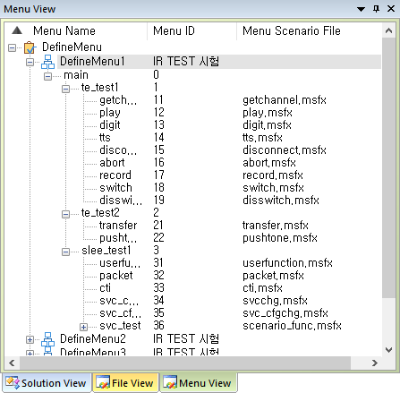
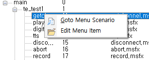

| Menu Pane(View) | 시작 다음 이전 |
프로젝트가 오픈되면 프로젝트에 포함된 시나리오 파일중 Global.ssfx에 아이템 이 있고 내용이 있을 경우 메뉴의 내용을 트리로 표시 합니다.

Menu Name : 메뉴 트리의 항목 표시 Menu ID : 메뉴 ID Menu Scenario File : 메뉴에 설정된 시나리오 파일 이름
기본 사항
· 설정된 메뉴를 전체를 쉽게 탐색 할 수 있습니다. · 시나리오 파일이 설정되어 있는 메뉴를 더블클릭하면 해당 시나리오 파일을 편집 화면에 열어 줍니다. · 시나리오 파일이 없는 경우의 더블클릭은 DefineMenu Item의 속성 창을 팝업하고 해당 메뉴로 이동 합니다. 이때, Global.ssfx가 열려 있지 않으면 먼저 편집 화면에 열어 놓습니다.
DefineMenu Item 이름을 포함하여 설정된 메뉴의 내용을 표시 합니다. 트리에서 이름에 마우스 오른 버튼을 클릭하면 처리 메뉴가 팝업 됩니다.

· 시나리오 파일이 설정되어 있는 경우 해당 시나리오 파일을 편집 화면에 열어 줍니다. · 시나리오 파일이 없는 경우는 DefineMenu Item의 속성 창을 팝업하고 해당 메뉴로 이동 합니다.
· DefineMenu Item의 속성 창을 팝업하고 해당 메뉴로 이동 합니다.
|
| Copyrights(C) Bridgetec.co.kr. All Rights Reserved | 시작 다음 이전 |